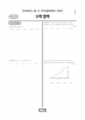

문제지


시험지를 먼저 풀어 보세요. 등급컷·표준점수·난이도는 흐리게 가려 뒀어요.
| 등급 | 원점수 | 표준점수 | 백분위 | 누적 |
|---|---|---|---|---|
| 1 | 88 | 138 | 95 | 4.17% |
| 2 | 77 | 128 | 89 | 11.06% |
| 3 | 63 | 115 | 77 | 23.49% |
| 4 | 50 | 103 | 60 | 40.84% |
| 5 | 37 | 92 | 38 | 60.9% |
| 6 | 29 | 84 | 23 | 77.05% |
| 7 | 19 | 75 | 11 | 89.16% |
| 8 | 13 | 70 | 5 | 97.02% |
등급별 컷 · 만점 100점
| 등급 | 표준점수 이상 | 인원(명) | 비율 |
|---|---|---|---|
| 1 | 138 | 20,949 | 5.62% |
| 2 | 128 | 24,131 | 6.48% |
| 3 | 115 | 41,908 | 11.25% |
| 4 | 103 | 62,551 | 16.79% |
| 5 | 92 | 89,231 | 23.96% |
| 6 | 84 | 49,023 | 13.16% |
| 7 | 75 | 44,634 | 11.98% |
| 8 | 70 | 25,928 | 6.96% |
| 9 | 58 | 14,088 | 3.78% |
시·도교육청 공개 자료
출처: 시·도교육청이 공개한 전국연합학력평가 성적 분석·통계자료(공개 자료 보기).
발행 기관: 시·도교육청(전국연합학력평가). 파일 위치: 이 사이트가 보관한 사본. 저작권은 발행 기관에 있습니다. 원본과 다르거나 게시 중단이 필요하면 연락처로 알려 주세요. 등급컷 출처 구분은 데이터 원칙에서 설명합니다.
막대 색은 역대 대비 난이도 · 진한 막대가 이 시험 · 막대를 누르면 그 회차로 이동
| 회차 | 1등급컷 | 표점 최고 | 1등급 표점 | 난이도 |
|---|---|---|---|---|
| 3월 학평2024년 고1이 시험 | 88 | 148 | 138 | 쉬움 |
| 9월 학평2023년 고1 | 80 | 154 | 135 | 어려움 |
| 6월 학평2023년 고1 | 88 | 146 | 136 | 매우 쉬움 |
| 3월 학평2023년 고1 | 88 | 145 | 134 | 매우 쉬움 |
| 11월 학평2022년 고1 | 88 | 147 | 137 | 어려움 |
| 9월 학평2022년 고1 | 84 | 150 | 136 | 보통 |
| 6월 학평2022년 고1 | 85 | 147 | 134 | 보통 |
| 3월 학평2022년 고1 | 88 | 147 | 136 | 매우 쉬움 |
| 11월 학평2021년 고1 | 85 | 147 | 134 | 보통 |
| 6월 학평2021년 고1 | 84 | 150 | 136 | 어려움 |